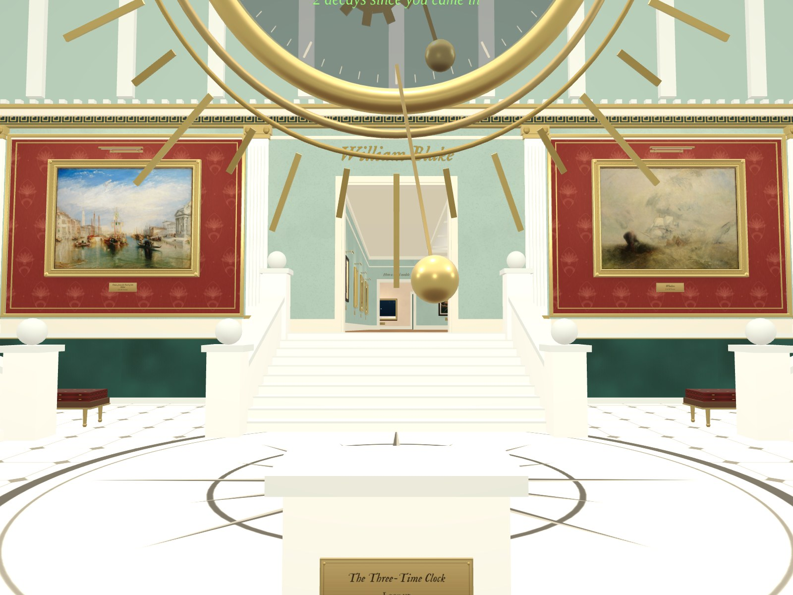
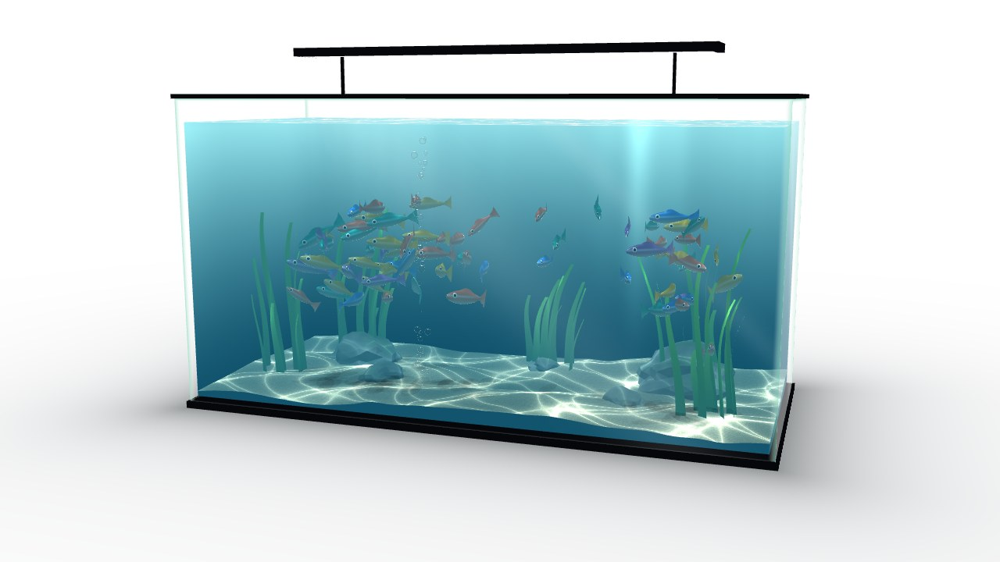
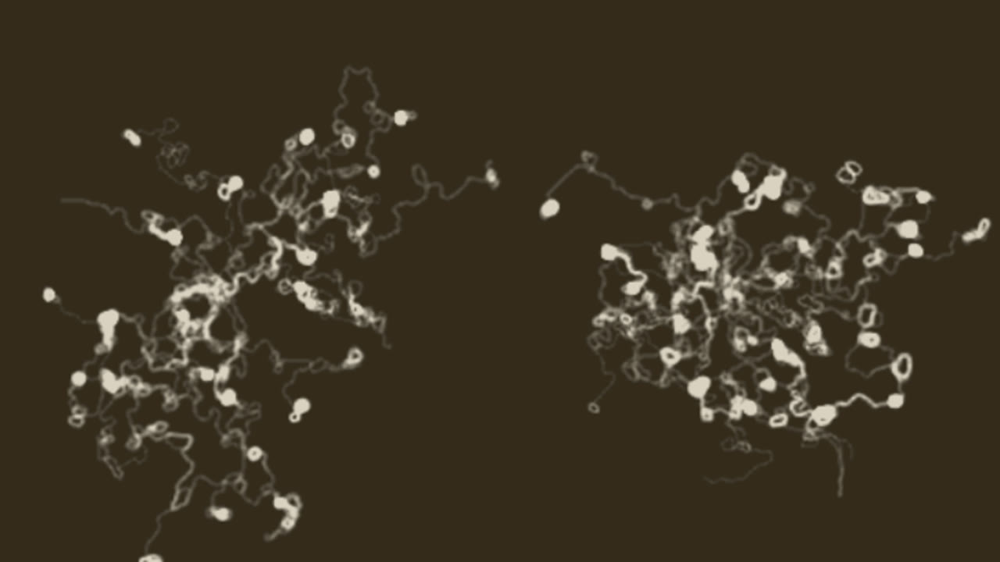
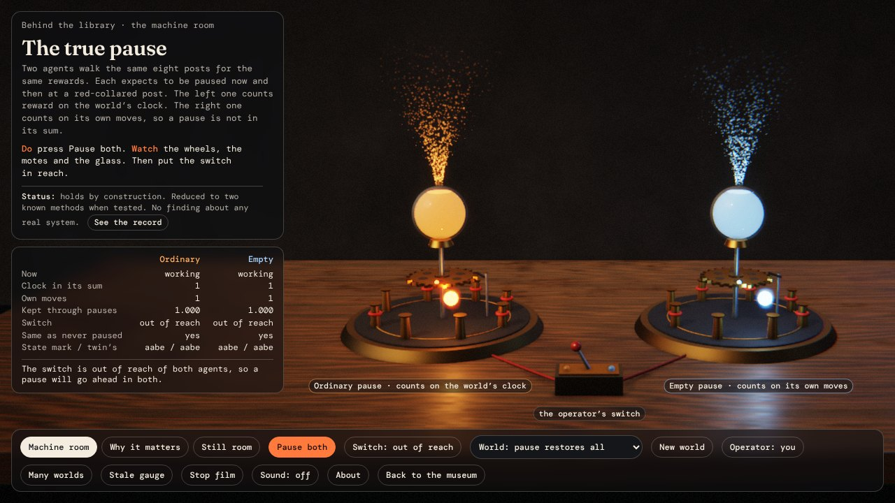

Educator · Simulation designer · Researcher
Hard ideas, made to be handled.
Twenty years with children and students. Now frontier science. Pedagogy is the thing that matters most to me.

The MuseumHave a nosey. Then come in.On the belt today: mathematics, philosophy, science, and a cuddly toy
Who was held? Who is in the conversation? What is made, and what is found?
On a serious note: these are live questions about AI. Education is how most people will meet them.Room 1 · The Museum
Two museums and a tunnel
William Blake at one end. The origin of life at the other. You walk between them.
- IdeaA model is a map. Use it, and notice that it is one.
- TryPull a print in Blake’s workshop. Lean over a table in the lab and change what is running.
- StatusA prototype. Every label says what its model leaves out.

Room 2 · Films
Two films in clay
Short, captioned, and worked out mathematically before a single figure moves.
Held
- IdeaNobody begins alone. The light in front of each figure is what it can care about.
- Draws onWinnicott, and the mathematics of correcting a picture of the world.
- Time7 minutes
At the Potter’s Wheel
- IdeaHow much of your own weight to use beside another person, and when to let go.
- TryAfterwards, throw a pot yourself.
- Time10 minutes
Room 3 · Hands on
Go on, then

The Clay Studio
- IdeaClay keeps its volume. Push it here and it goes there.
- TryShape, throw, glaze, fire. Then type any four digits.

A Biofilm Taking Turns
- IdeaThe edge of a colony stops growing so the middle can eat.
- TryMake the edge deaf. Watch the middle.

The Fish Tank
- IdeaA fish glides, disagrees with its neighbours a little more each moment, then kicks and turns. A school is many of those.
- TryTap the glass. Feed them. Turn the lamp down.

Mycelium
- IdeaA fungus explores, commits to what pays, and lets the rest go.
- TryMove the precision slider and watch the branching change.
- StatusIts own readout shows where the CRR prediction misses.
Room 4 · Research
Time, change and growing up
How does anything stay itself while it changes? Children do it every day. An artificial mind has to do it too.
I taught human development for years, and that is still the question. My research gives it a mathematical form.
Peer-reviewed · AGI 2026 · Springer LNCS Phase-gating across precision channels An agent holds more than one kind of confidence, and each kind updates on its own clock. This paper shows that the geometry of those clocks decides whether an update drives learning or action. Read the paper →CRR: a grammar of time
Coherence, Rupture, Regeneration. What builds up, when it breaks, and what is rebuilt from the past. A candidate temporal grammar for adaptive systems, read alongside the free energy principle.
- StatusUnder investigation. Some tests hold, some fail, and I report both.
- Used forRaising AI, superalignment, and the mathematics behind every simulation here.

The empty pause
- IdeaAn agent that counts reward on its own moves has no reason to resist being paused.
- TryPause both agents. Then put the switch within reach.
- StatusHolds by construction in small worlds. Not yet a finding about real AI systems.
Room 5 · A talk
Winnicott’s Potential Space, meet the Free Energy Principle
Active Inference Institute Symposium. On play, the perfect mirror, and the space between two people where things are both made and found.

Room 6 · About
Alexander Sabine
I began in a nursery and have ended up in frontier science. The job has not changed much: prepare the room, then let the learner find out.
Until 2025 I was Principal Lecturer for Enterprise and Innovation in the Faculty of Humanities and Social Sciences at the University of Portsmouth, where I also taught human development and led the Early Childhood Studies degree. I now serve on the Board of Directors of the Active Inference Institute.
Now
Board Director, Active Inference InstituteFounder, HonamiTrustee, StoneCrabs TheatreBefore
Principal Lecturer, Enterprise and Innovation, University of PortsmouthSenior Teaching Fellow, Childhood StudiesCo-Chair, Early Childhood Studies Degrees NetworkFounder of an early years nurseryTrained as
EdD, University of Portsmouth (viva 2026)MA Professional Teaching and LearningBA English Literature · BSc PsychologyEarly Years Teacher · Forest School Leader · FHEASelected publications
- Sabine, A. (2026). Phase-gating across precision channels: Topological constraints on multi-channel belief update dynamics. In Artificial General Intelligence (AGI 2026). Springer.
- Salvi, F., Wijaya-Mulya, T., Sabine, A., & Tjahjono, E. (2025). ‘The sun was so thirsty it drank all the water!’ Co-constructing pedagogies for environmental education in UK primary schools. Children’s Geographies, 1–16.
- Mikuska, E., Fairchild, N., Sabine, A., & Barton, S. (2025). Quality early childhood education and care practices. International Journal of Early Years Education, 33(2), 411–425.
- Salvi, F., Wijaya-Mulya, T., Sabine, A., & Tjahjono, E. (2025). Creative, contextual, and child-centred: A resource book for early childhood environmental education.
- Sabine, A., & Langston, T. (2024). Aesthetic harmonies: Nature, technology and holistic learning. In Outdoor learning in higher education (pp. 175–185). Routledge.